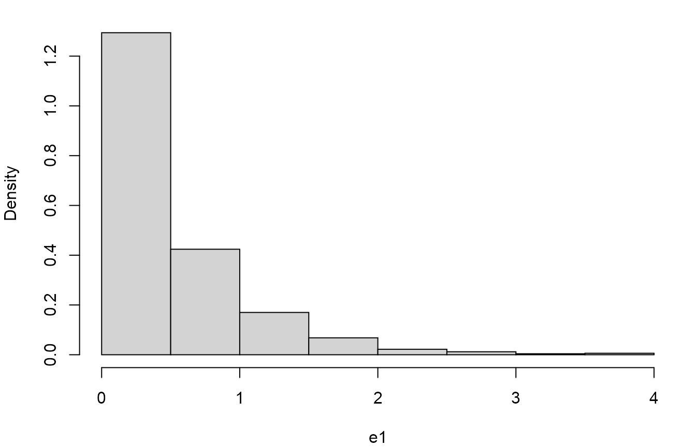
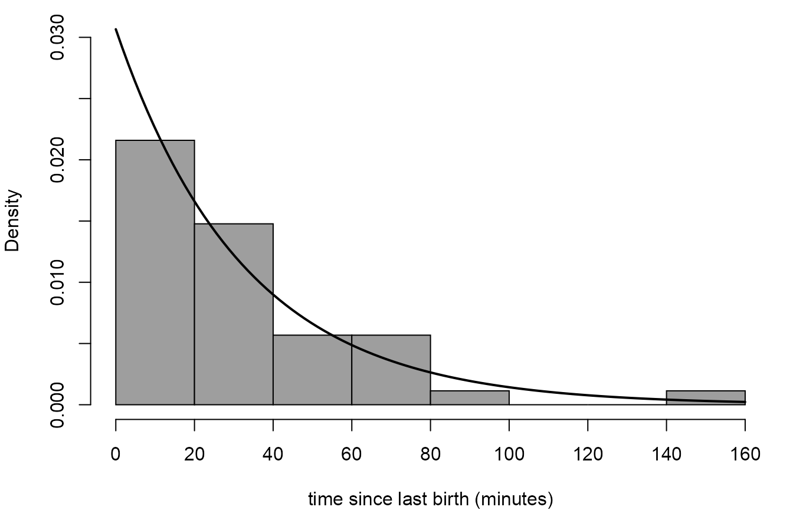
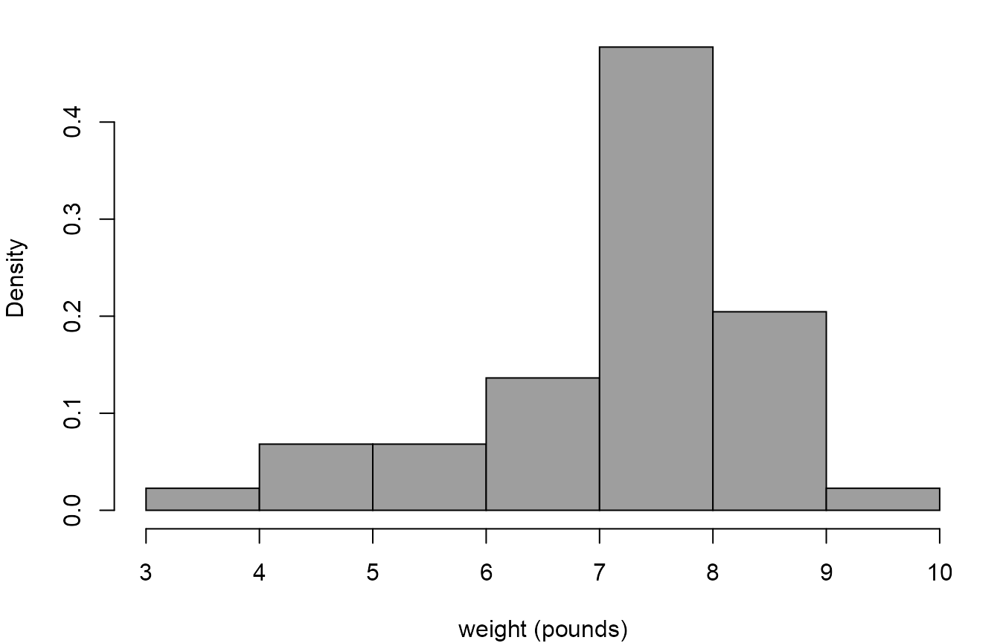

vignettes/stat0002-ch5b-continous-random-variables-vignette.Rmd
stat0002-ch5b-continous-random-variables-vignette.RmdThe purposes of this vignette are to direct you to R functions relating to the continuous probability distributions considered in Chapter 5 of the STAT0002 notes and to provide code to do some of the things that appear in the lecture slides. We do this using the standard R functions (in the stats package) and using the distributions3 package (Hayes and Moller-Trane 2019), which provides a neat way to work with random variables in R. Please see the Discrete Random Variables vignette for a brief introduction to these functions.
We illustrate these functions using the Australian birth times data, which are available in the data frame aussie_births.
> library(stat0002) Loading required package: rpanel Loading required package: tcltk Package `rpanel', version 1.1-4: type help(rpanel) for summary information > head(aussie_births) time sex weight 1 5 girl 3837 2 64 girl 3334 3 78 boy 3554 4 115 boy 3838 5 177 boy 3625 6 245 girl 2208
We will not say much about the uniform distribution here. However, it is a very important distribution because the standard uniform distribution, U(0, 1), is use widely to simulate values from probability distributions. See the Stochastic Simulation vignette for details.
First, we show two ways to produce a (pseudo-)random sample from a U(0, 1) distribution. We use the same seed (use ?set.seed to find out more) to show that these approaches are equivalent. This is because the distributions3 package actually uses the function runif in the background.
> # Using the runif() function in the stats package
> set.seed(13112019)
> n <- 10
> u1 <- runif(n)
> u1
[1] 0.6499195 0.1472341 0.5326011 0.5731850 0.1622124 0.4371483 0.5716510
[8] 0.3743011 0.2070426 0.9377372
> # Using the distributions3 package to define a U(0, 1) object U
> library(distributions3)
Attaching package: 'distributions3'
The following objects are masked from 'package:stats':
Gamma, quantile
The following object is masked from 'package:grDevices':
pdf
> set.seed(13112019)
> U <- Uniform(0, 1)
> u2 <- random(U, 10)
> u2
[1] 0.6499195 0.1472341 0.5326011 0.5731850 0.1622124 0.4371483 0.5716510
[8] 0.3743011 0.2070426 0.9377372The inversion method (see Stochastic Simulation vignette for details) means that we can easily transform the simulated values produced by runif in a way that produces a (pseudo-)random sample from an exponential distribution.
> lambda <- 2 > u <- runif(1000) > e1 <- -log(u) / lambda > hist(e1, prob = TRUE, main = "")

We produce a histogram of sample waiting times in the Australian birth times data, with a superimposed exponential density.
> # Calculate the sample waiting times, in minutes > w <- diff(c(0, aussie_births$time)) > # Estimate lambda (rate of births per minute) > lambdahat <- 1 / mean(w) > # The estimate of the rate of births per hour > lambdahat * 60 [1] 1.839721 > # Histogram and superimposed exponential density > hist(w, prob = TRUE, breaks = 8, axes = FALSE, col = 8, ylim = c(0, 0.03), + xlab = "time since last birth (minutes)", main = "") > axis(1, at = seq(0, 160, 20)) > axis(2, at = seq(0, 0.03, 0.005)) > curve(dexp(x, rate = lambdahat), add = TRUE, lwd = 2)

We use the birth weights in the Australian birth times data to illustrate how to perform calculations relating to the normal distribution.
> # Convert weights from grams to pounds > wt <- aussie_births$weight / 453.5 > # Produce a histogram of the birth weights > hist(wt, prob = TRUE, xlab = "weight (pounds)", col = 8, main = "")

We suppose that the weight \(W\) (in pounds) of a randomly chosen baby has a \(N(\mu, \sigma^2)\) distribution, even though it seems clear from the histogram that this assumption may be inappropriate.
> # Estimate the mean, variance and (standard deviation) of W > muhat <- mean(wt) > sigma2hat <- var(wt) > sigmahat <- sd(wt)
Suppose that \(W\) has a normal distribution, with mean equal to muhat and standard deviation equal to sigmahat. In an example in the notes we calculated \(P(W > 10)\), using a tables of c.d.f. of the standard normal distribution. To perform this calculation in R we could do either of the following.
> pnorm(10, mean = muhat, sd = sigmahat, lower.tail = FALSE) [1] 0.008553284 > W <- Normal(mu = muhat, sigma = sigmahat) > 1 - cdf(W, 10) [1] 0.008553284
The answer that we get is slightly different from the one in the lecture slides, because we rounded a number (to 2.38) before we looked up the value that we needed in the table. Below we confirm that R gives the same answer as the table (to 5 decimal places).
> pnorm(2.38) [1] 0.9913437 > 1 - pnorm(2.38) [1] 0.008656319
In the coffee example in the lecture slides we needed to calculate the 95% quantile of a standard N(0, 1) normal random variable. We could do this in one of the following ways.
> qnorm(0.95) [1] 1.644854 > Z <- Normal(0, 1) > quantile(Z, 0.95) [1] 1.644854
Hayes, A., and R. Moller-Trane. 2019. distributions3: Probability Distributions as S3 Objects. https://github.com/alexpghayes/distributions3.